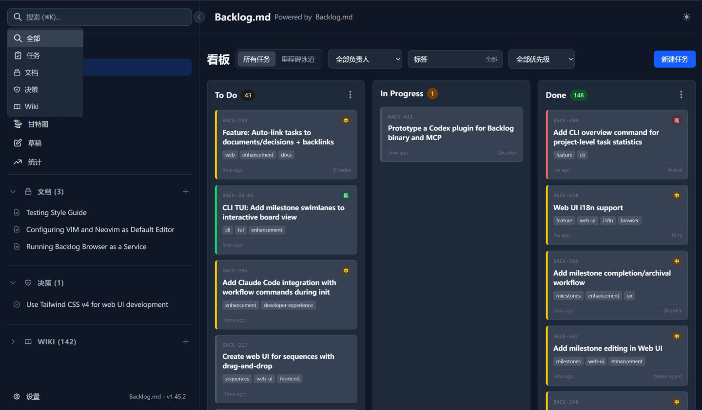
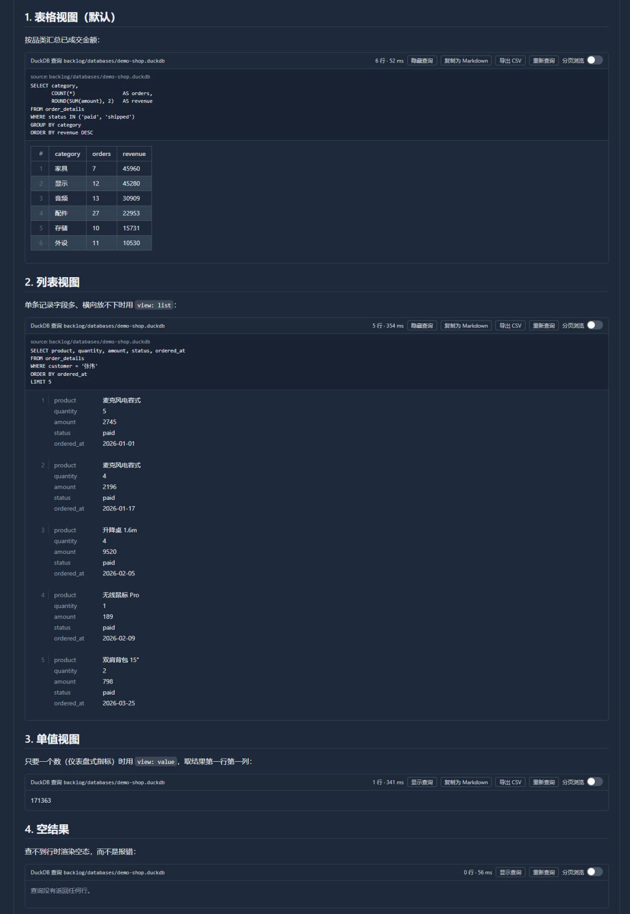
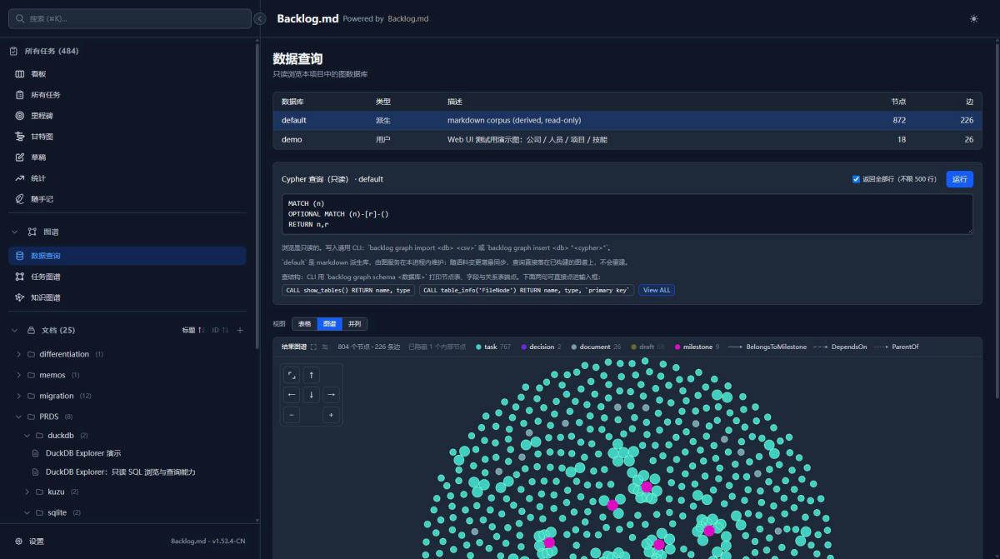
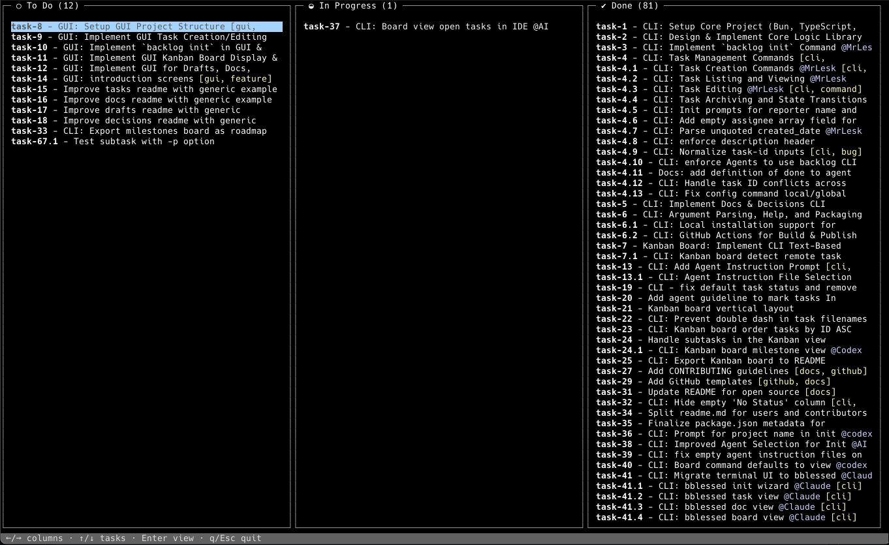
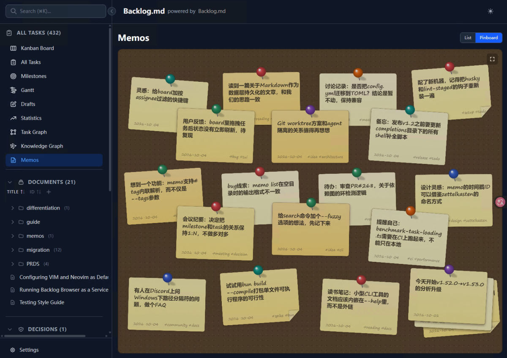

AI 不再凭空发挥
每个任务自带描述、验收标准和实施计划。Agent 在写代码之前先说清楚要做什么，你读完再放行。
Backlog.md 把任务、验收标准、实施计划和执行记录写成仓库里的 Markdown 文件。没有数据库，没有黑盒。AI 负责拆解与执行，你在三个关键节点审查批准。
$ npm i -g @kuwork/backlog.md
无需注册账号 离线可用 macOS、Linux、Windows

每一次
AI
执行
都留在
你能审查的
文件里。
任务
是可读的
Markdown，
进度
是可审的
Git
diff，
知识
沉淀成
可查的
Wiki。
把需求丢给 Agent，它能写出能跑的函数。但它不知道接下来该做什么，不知道边界在哪里，也不会主动告诉你它替你做了哪些判断。上下文一长，方向就散了，最后你得花一个下午去读它改了什么。
每个任务是一份 Markdown 文件，包含描述、验收标准和实施计划。AI 在动手之前先写清楚要做什么，你批准之后它才写代码。任务随代码一起进版本控制，可以被 diff、review、搜索和归档。
四个直接的结果：方向不跑偏、审查有抓手、数据不出机器、知识能累积。
每个任务自带描述、验收标准和实施计划。Agent 在写代码之前先说清楚要做什么，你读完再放行。
规格、计划、结果分别可以批准。方向错了在写第一行代码之前就能拦住，而不是等到 review 几千行 diff。
全部存在项目本地的 Markdown 文件里。没有云端账号，没有订阅，离线可用，Git 也是可选的。
LLM Wiki 把任务、文档和决策沉淀成可查询的项目记忆。换会话、换人，上下文不用从零重建。
初始化、拆解规划、审查沉淀。每一步都有明确的交接物。
在任意 Git 仓库里运行一次命令，选择用 CLI 指令还是 MCP 接入你的 AI 工具。也可以跳过 AI，只当任务管理器用。
把想法告诉 Agent，它建任务、写验收标准，再研究代码库写出实施计划，然后停下来等你批准。
看 diff、跑测试、核对验收标准。通过后写下最终总结，知识自动进入 Wiki，成为下一步的输入。
终端、Web 界面、MCP 与 CLI 读写同一批 Markdown 文件，随时切换。




CLI 指令是默认的接入方式，任何能执行命令的 Agent 都能直接开始工作。偏好 MCP 时，backlog init 也可以自动完成配置。
不需要。Backlog.md 的数据全部存放在项目本地的 backlog 文件夹里，没有云端账号，也没有订阅要求，离线也能正常使用。
任务就是仓库里的 Markdown 文件，和代码一起进版本控制，可以被 diff、review、搜索和归档。同时它面向 AI Agent 设计：内置 CLI 指令与 MCP 接口，Agent 能直接按任务工作，人类在关键节点审查。
任何能执行命令行或支持 MCP 的工具都可以，包括 Claude Code、Codex、Gemini CLI、Kiro 和 Cursor。推荐用 CLI 指令接入，Agent 运行 backlog instructions overview 就能拿到当前工作流说明。
项目内的 backlog 目录，默认是 backlog/ 或 .backlog/，也可以在 backlog.config.yml 里配置成其他项目相对路径。任务本身是可直接阅读的 Markdown 文件。
可以。终端命令和 Web 界面都能独立使用，所有改动与 Markdown 文件保持同步。你随时可以在手动工作流和 AI 辅助之间切换，两者基于同一批文件。
在已有仓库里直接运行 backlog init 即可。没有 Git 用 backlog init --no-git 创建纯文件系统项目，此时跨分支检查、远程操作和自动提交会被禁用。
CLI 指令是默认推荐方式，先运行 backlog instructions overview 就能拿到当前版本的工作流说明，不会与实现细节脱节。如果你更偏好 MCP，backlog init 可以自动配置 Claude Code、Codex、Gemini CLI、Kiro 或 Cursor。
默认只绑定 127.0.0.1，仅本机可访问。需要局域网访问时才用 backlog browser --host 0.0.0.0，但 API 未做认证，不建议在不可信的网络里开放。
可以。任务随代码进版本控制，用正常的代码评审流程推进即可。自动提交默认关闭，适合需要精细控制提交历史的多人场景；单人自动化工作流可以打开它，获得一操作一提交的干净历史。
MIT 许可证，个人和商业用途都免费，只需保留出处署名。
macOS、Linux 和 Windows 都支持。可以用 npm、bun、Homebrew 或 Nix 安装。
MIT 开源，数据在你自己的仓库里，不需要账号，也没有云端依赖。装完跑一次 backlog init 就能看到效果。
也可以用 bun add -g @kuwork/backlog.md、brew install backlog-md 或 nix run github:kuwork/Backlog.md